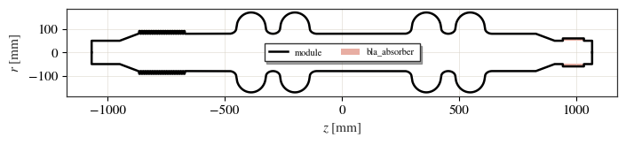
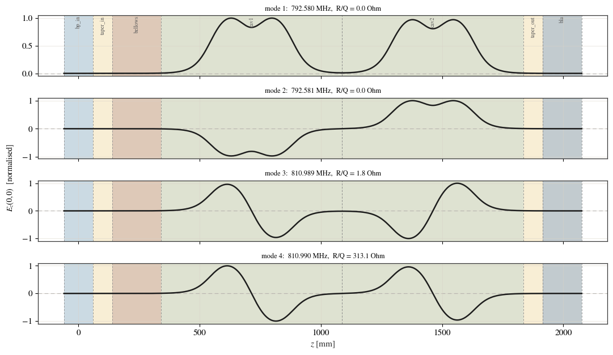
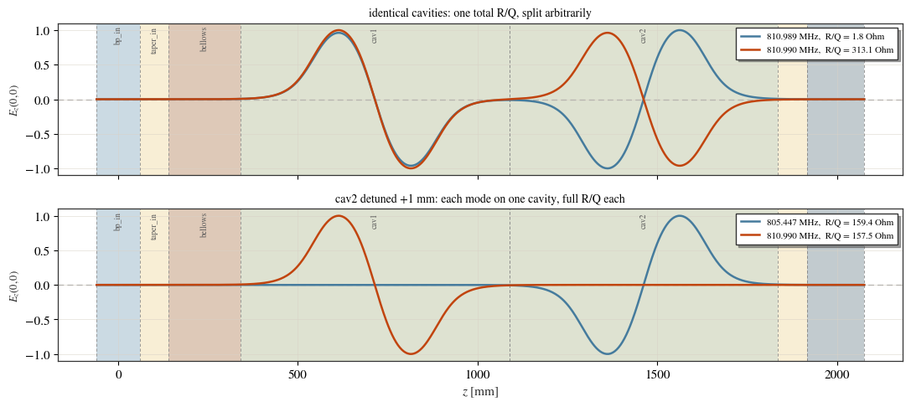

A multi-cavity module¶
A single cavity is rarely what you install. This notebook builds a beam line holding two two-cell cavities — input pipe, taper, bellows, the two cavities, taper, absorber — and treats it as one structure: one mesh, one eigenproblem, one set of parameters.
The cavities are not solved in isolation and added up: the solve finds the modes of the whole line. Two nominally identical cavities do not give one strong mode each. Sections 4 and 5 show what they give instead, and how to read it.
This notebook is live: every figure below is produced by running cavsim2d.
import os
import tempfile
import numpy as np
import matplotlib.pyplot as plt
from cavsim2d import (Assembly, BLA, Beampipe, Bellows, EllipticalCavity,
Taper)
from cavsim2d.utils.style import apply_style, WARM
apply_style()
workspace = tempfile.mkdtemp()
# A TESLA-like mid cell: A, B, a, b, Ri, L, Req (mm)
MIDCELL = [62.22, 66.13, 30.22, 23.11, 80.0, 93.5, 171.20]
R_IRIS = MIDCELL[4] # 80 mm - the cavity bore
R_PIPE = 50.0 # the module's external beam pipe
EIG = {'polarisation': 'monopole', 'n_modes': 8,
'boundary_conditions': 'mm', 'mesh_config': {'h': 12, 'p': 2}}
1. Building the module¶
The external beam pipe is narrower than the cavity bore, so a Taper matches
the two at each end rather than leaving an abrupt step. The cavities are built
with beampipe='both', so each carries its own stubs and the two sit some
distance apart — which, as section 4 shows, is what decides whether they behave
as one structure or as two.
def cavity(i):
return EllipticalCavity(2, MIDCELL, beampipe='both', name=f'cav{i}')
def bellows():
return Bellows(Ri=R_IRIS, A=12.0, L_p=10.0, N_conv=20,
R_root=2.0, R_crest=2.0)
module = Assembly([
Beampipe(R=R_PIPE, L=120.0, name='bp_in'),
Taper(R_left=R_PIPE, R_right=R_IRIS, L=80.0, name='taper_in'),
bellows(),
cavity(1),
cavity(2),
Taper(R_left=R_IRIS, R_right=R_PIPE, L=80.0, name='taper_out'),
BLA(R=R_PIPE, L=160.0, absorber_length=90.0, absorber_thickness=10.0,
eps_r=10.0, tan_delta=0.3, maxh=5.0),
], name='module')
print(repr(module))
print(f'length : {module.length:.0f} mm')
print(f'accelerating cells : {module.n_cells}')
print(f'parameters : {len(module.parameters)}')
Assembly('module', bp_in + taper_in + bellows + cav1 + cav2 + taper_out + bla, 2136 mm)
length : 2136 mm
accelerating cells : 4
parameters : 69
ax = module.plot('geometry', mirror=True, show=False)
ax.legend(loc='center', fontsize=7.5, ncols=2)
plt.show()

2. What the module is made of¶
offsets() gives where each element was placed, so an element’s own
coordinates can be mapped into module coordinates.
print(f"{'label':12s} {'type':16s} {'starts at':>10s} {'length':>9s}")
print('-' * 51)
for label, el, dz in zip(module.labels, module.elements, module.offsets()):
zs = [z for z, _ in el.profile().points]
print(f'{label:12s} {type(el).__name__:16s} '
f'{dz + min(zs) * 1e3:10.1f} {(max(zs) - min(zs)) * 1e3:9.1f}')
label type starts at length
---------------------------------------------------
bp_in Beampipe -60.0 120.0
taper_in Taper 60.0 80.0
bellows Bellows 140.0 200.0
cav1 EllipticalCavity 340.0 748.0
cav2 EllipticalCavity 1088.0 748.0
taper_out Taper 1836.0 80.0
bla BLA 1916.0 160.0
Only the two cavities count as accelerating cells — four in total. The pipe, taper, bellows and absorber are passive, and deliberately do not count: that cell number is what picks the monopole mode of interest, so letting a bellows contribute would report the wrong mode of the module.
3. The spectrum¶
Four cells give four modes in the fundamental band. Solve for more than that and the band, and the gap above it, both show up.
module.set_workspace(os.path.join(workspace, 'module'))
module.eigenmode.run(EIG)
df = module.eigenmode.qois_df
print(df[['mode', 'freq [MHz]', 'R/Q [Ohm]']].to_string(index=False))
mode freq [MHz] R/Q [Ohm]
0 792.580379 0.011207
1 792.581130 0.000063
2 810.989010 1.824535
3 810.989880 313.080904
4 1387.704005 0.149301
5 1453.290358 0.506515
6 1475.189509 2.021092
7 1479.984995 0.955539
f = df['freq [MHz]'].to_numpy()
rq = df['R/Q [Ohm]'].to_numpy()
band = f < 1000.0 # the fundamental band
print(f'{band.sum()} modes below 1 GHz, in two close pairs:')
for lo, hi in ((780, 800), (800, 830)):
sel = (f > lo) & (f < hi)
if sel.sum() < 2:
continue
print(f' {f[sel].min():.3f} / {f[sel].max():.3f} MHz'
f' -> split {1e3 * (f[sel].max() - f[sel].min()):.2f} kHz,'
f' R/Q {rq[sel][0]:.1f} and {rq[sel][1]:.1f} Ohm')
4 modes below 1 GHz, in two close pairs:
792.580 / 792.581 MHz -> split 0.75 kHz, R/Q 0.0 and 0.0 Ohm
810.989 / 810.990 MHz -> split 0.87 kHz, R/Q 1.8 and 313.1 Ohm
Two pairs, each split by under a kilohertz, and within the upper pair one member holds almost all of the R/Q.
4. Looking at the modes¶
Frequencies alone do not tell you what a mode is. plot_axis_field(mode=...)
draws the signed accelerating field along the axis for any solved mode, and
that is what makes a spectrum readable: where the lobes sit says which part of
the line a mode lives in, and their relative sign says how the cells are
phased.
shade_elements(ax) shades the axial extent of each device behind the curve, so
the field can be read against the hardware. Elements of the same kind share a
colour — both cavities one shade, both tapers another — and a faint rule marks
every boundary, so two like elements in a row stay distinguishable.
n_band = int(band.sum())
fig, axes = plt.subplots(n_band, 1, figsize=(11, 1.6 * n_band), sharex=True)
for m, ax in enumerate(axes):
# shade which device occupies which stretch of z; same kind, same colour
module.shade_elements(ax, legend=False, labels=(m == 0))
module.plot_axis_field(mode=m, ax=ax, show=False, color='#1d1d1d',
label='_nolegend_')
ax.set_title(f'mode {m + 1}: {f[m]:.3f} MHz, R/Q = {rq[m]:.1f} Ohm',
fontsize=9)
ax.set_ylabel('')
if ax is not axes[-1]:
ax.set_xlabel('')
fig.supylabel('$E_z(0,0)$ [normalised]', fontsize=10)
plt.tight_layout()
plt.show()

The two modes near 810.99 MHz differ only in the relative phase of the two cavities:
the weak one has cavity 1 running
+ -and cavity 2 running- +— out of phase, so the voltage one cavity gives the beam is cancelled by the other and R/Q collapses to nothing;the strong one has both cavities running
+ -— in phase, so the voltages add and R/Q comes out at twice a single cavity.
Neither mode belongs to one cavity: they are the in-phase and out-of-phase combinations of the pair. The 792.58 pair behaves the same way, except that both of its members are 0-mode-like and neither accelerates.
5. Why two cavities do not give two strong modes¶
With beampipe='both' each cavity carries its own stubs, so the two cavity
bodies sit far apart and are barely coupled. Two nominally identical, uncoupled
cavities are degenerate: two modes at the same frequency, here to within a
kilohertz.
In a degenerate pair any linear combination of the two is equally valid as an eigenvector. Here the solver happened to return the clean in-phase and out-of-phase combinations, which is why the R/Q split so sharply. On a different mesh it can just as legitimately return two partly-localised combinations and divide the R/Q, say, 121 / 193 — same structure, same physics, different basis. So the split between the two members is not a property of the hardware.
What is robust is the sum over the pair. Compare it against one cavity on its own.
single = EllipticalCavity(2, MIDCELL, beampipe='both', name='single')
single.set_workspace(os.path.join(workspace, 'single'))
single.eigenmode.run({**EIG, 'n_modes': 3})
sdf = single.eigenmode.qois_df
rq_single = sdf['R/Q [Ohm]'].max()
f_single = sdf.loc[sdf['R/Q [Ohm]'].idxmax(), 'freq [MHz]']
print(f'one 2-cell cavity: pi-mode {f_single:.3f} MHz, R/Q = {rq_single:.2f} Ohm')
upper = (f > 800) & (f < 830)
print(f'module, upper pair R/Q : '
f"{' + '.join(f'{v:.2f}' for v in rq[upper])} = {rq[upper].sum():.2f} Ohm")
print(f'twice one cavity : {2 * rq_single:.2f} Ohm')
one 2-cell cavity: pi-mode 810.990 MHz, R/Q = 157.38 Ohm
module, upper pair R/Q : 1.82 + 313.08 = 314.91 Ohm
twice one cavity : 314.77 Ohm
The pair carries exactly the R/Q of two cavities, shared between its two members in a ratio that means nothing. Reading either member on its own — the 313 Ohm one or the 2 Ohm one — would be reading the arbitrary basis, not the structure.
Perturbing one cavity decouples them¶
Detune the second cavity and the degeneracy breaks. Each mode then localises on a single cavity — the field is flat zero over the other — and each carries that cavity’s own R/Q. Now there are two strong modes, at two distinguishable frequencies, and each one means something on its own.
This is also why field flatness matters in a real module: a fabrication error on one cavity does not shift the band as a whole, it strands the energy in one cavity.
print('cavity 2 equator radius :', module.parameters['cav2:Req_m'], 'mm')
module.set_tune_value('cav2:Req', 172.2) # +1.0 mm, cavity 2 only
module.set_workspace(os.path.join(workspace, 'detuned'))
module.eigenmode.run(EIG)
ddf = module.eigenmode.qois_df
fd = ddf['freq [MHz]'].to_numpy()
rqd = ddf['R/Q [Ohm]'].to_numpy()
strong = rqd > 1.0
print(ddf.loc[strong, ['mode', 'freq [MHz]', 'R/Q [Ohm]']].to_string(index=False))
cavity 2 equator radius : 171.2 mm
mode freq [MHz] R/Q [Ohm]
2 805.446894 159.442200
3 810.989638 157.497911
6 1474.278431 2.208295
8 1514.419253 1.188477
top2 = np.argsort(rqd)[-2:] # the two strong modes of the detuned line
fig, axes = plt.subplots(2, 1, figsize=(11, 5), sharex=True)
for ax in axes:
module.shade_elements(ax, legend=False)
# nominal: the degenerate pair (fields live in the 'module' workspace)
module.set_workspace(os.path.join(workspace, 'module'))
for m, colour in zip(np.flatnonzero(upper), WARM[:2]):
module.plot_axis_field(mode=int(m), ax=axes[0], show=False, color=colour,
label=f'{f[m]:.3f} MHz, R/Q = {rq[m]:.1f} Ohm')
axes[0].set_title('identical cavities: one total R/Q, split arbitrarily',
fontsize=10)
# detuned: two localised modes
module.set_workspace(os.path.join(workspace, 'detuned'))
for m, colour in zip(sorted(top2), WARM[:2]):
module.plot_axis_field(mode=int(m), ax=axes[1], show=False, color=colour,
label=f'{fd[m]:.3f} MHz, R/Q = {rqd[m]:.1f} Ohm')
axes[1].set_title('cav2 detuned +1 mm: each mode on one cavity, full R/Q each',
fontsize=10)
for ax in axes:
ax.legend(fontsize=8, loc='upper right')
ax.set_ylabel('$E_z(0,0)$', fontsize=9)
axes[0].set_xlabel('')
plt.tight_layout()
plt.show()
# put the module back the way it was
module.set_tune_value('cav2:Req', 171.20)
module.set_workspace(os.path.join(workspace, 'module'))

Assembly('module', bp_in + taper_in + bellows + cav1 + cav2 + taper_out + bla, 2136 mm)
What to take away¶
A module is built the same way a single element is, and solved as one structure. Parameters are namespaced, so any one cavity is reachable by label.
Four cells give four modes.
plot_axis_field(mode=...)is how you tell them apart: the signed field shows where a mode lives and how it is phased.Identical, weakly coupled cavities give degenerate pairs, not one strong mode each. Within a pair the R/Q split between members is arbitrary — only the sum is meaningful, and it equals the R/Q of the cavities taken separately.
Break the degeneracy and the modes separate and localise, each with its own full R/Q. Detuning does it; so does coupling the cavities properly, by giving them
beampipe='none'and a short drift so the band spreads over MHz rather than kHz.Passive elements (pipes, tapers, bellows, absorbers) shape the module without counting as cells.
See Assembling a beam line for the mechanics of concatenation, and The bellows element for the corrugation itself.